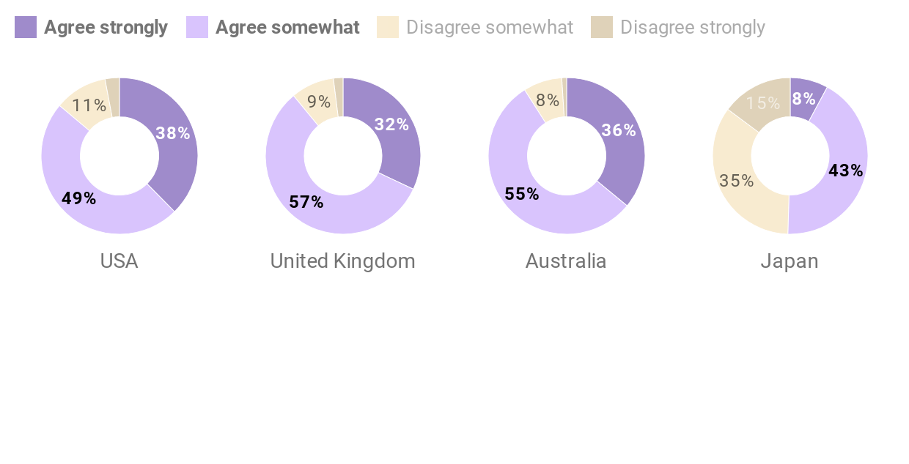
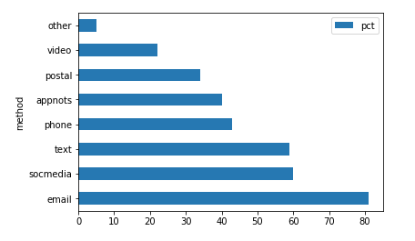
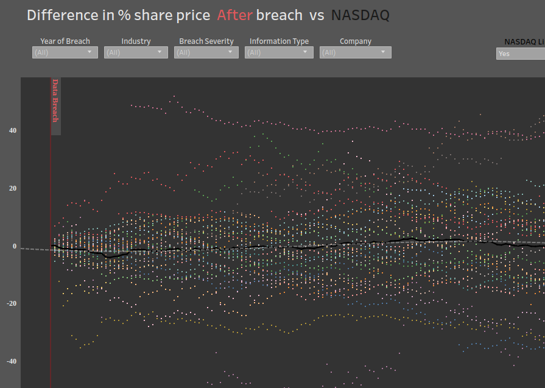

Everything that is illustrator is responsive and ai2html
Outline
People are pretty confident about whether they can distinguish phish.
People Confident They Know What Phishing Looks Like
Most people feel confident they can differentiate between a phishing email and a genuine one. The Japanese seem a little more realistic about their capabilities.

Source: Webroot, "Hook, Line, and Sinker" 2019.
However, they don't seem to know what forms phishing can take. (turn this into multiples, datawrapper)
What Does Phishing Look Like?
Most people know about phishing emails, but not everyone seem to realize that phishing can be a video chat message, a phone call, or even a piece of postal mail.

Source: Webroot, "Hook, Line, and Sinker" 2019.
This is what happens when you don't know what can go wrong
* Calvin is having a bad day: [scrollytelling, d3?]
- Get an email
- BEC
- malware infection
- phone call
- stats in images, story in scroll
Do you trust the company or stop using them? 71 % claims that they wil think about whether they trust the company and not create an account with them
stock prices don't change: non-scrolly interactive, d3
Stock Prices Before and After a Breach
Most people say they don't trust a company after a breach, but the stock market doesn't tell that story.

Source: NASDAQ Stock Prices
What people do after a breach: non-scrolly interactive, d3
What To Do After a Breach
Most people order new cards or change their passwords after a breach, but very few notify government regulators or law enforcement. However, the fact that nearly a third don't change passwords is a problem.

Source: Webroot, "Hook, Line, and Sinker" 2019.
point: the game
All the data files and code used for analysis (Jupyter Notebook) can be found at the project's repository on GitHub.